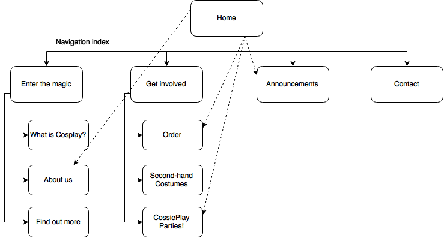

Name: Mathilde Bellec
Login: JC335112
The website is intended to get people to know CossiePlay, in order to increase the number of orders and the number of people coming to the CossiePlay parties.
Expanding CossiePlay's audience also includes seducing younger cosplayers than the ones they have been used to work with until today.
We should not forget that CossiePlay is a family business. The objective is to make a website that reflects the close proximity CossiePlay has with the customers. To conclude, we have to make it more professional but still authentic.
The site's success will be evaluated by the number of additional orders and entries for the CossiePlay parties it will have brought.
CossiePlay will also be able to decide later on if they want to include a survey asking for the age of the purchasers, to find out if they succeeded in seducing a younger audience.
The website will be designed for the new audience CossiePlay is trying to seduce : Highschool kids, University students and young adults.
However, it will not have to exclude the original and faithful customers, namely the 35-50 years old cosplayers.
For this, we will use images and short texts. Indeed, graphical content is more adapted to our target audience than textual content.
We will make it simple, not to trespass on the young customers' limited patience. It would be more beneficial and effective to provide information directly. If they have to spend time on it, they will give up.
Moreover, young people know really well how to use technologies so we don't have to make it too obvious or explicit, which they would find even more annoying. This idea is also linked to the fact that the information must not be presented in a way that would appear childish.
The website also has to engage with the audience. Interactivity is the key.
CossiePlay Flowchart